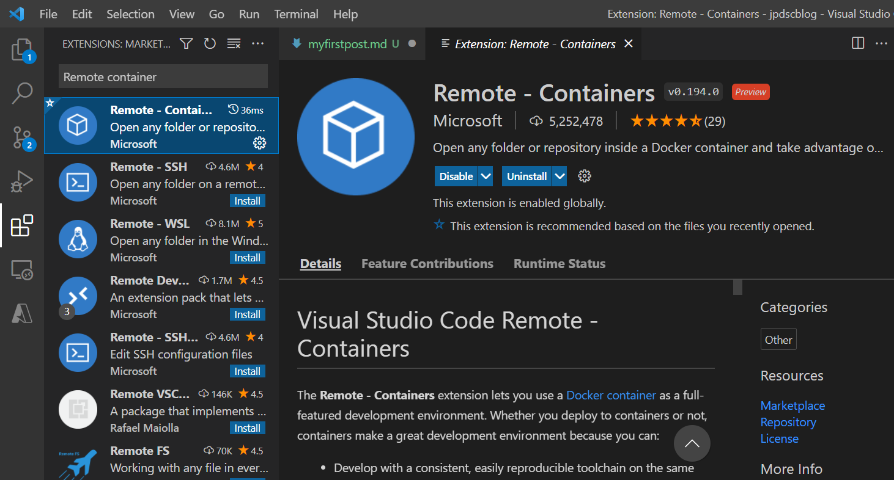
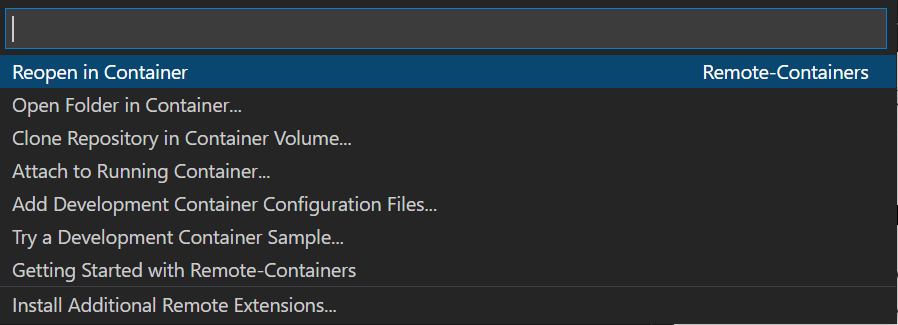
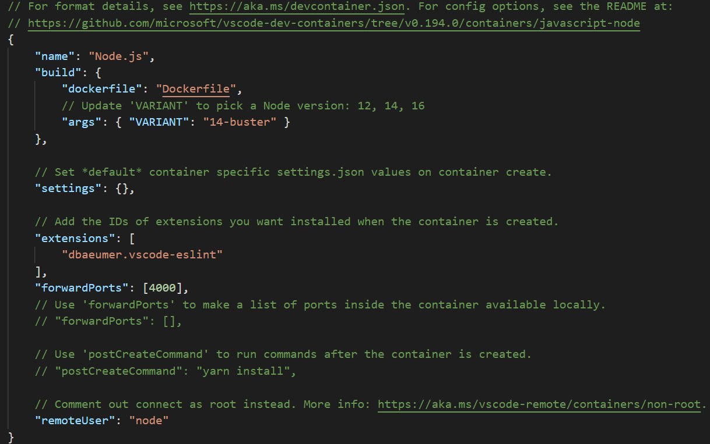
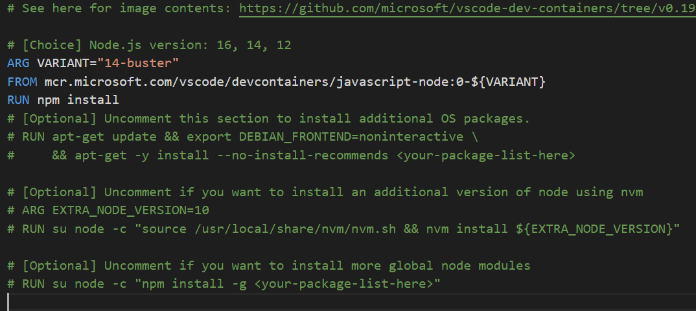
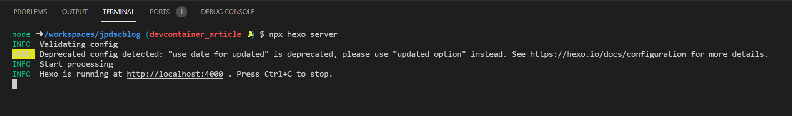

こんにちは、 Developer Support Core チーム インターン生の陳です。
最近 Devcontainer について勉強し、本チームブログの執筆をテーマに実装したので、活用事例としてシェアしたいと思います。
本日の目次は以下となります。
- Devcontainer を使用した理由
- Devcontainer の特徴
- Devcontainer による環境構築方法
Devcontainer を使用した理由
最初はメンターの木下さんから紹介していただき、すごく便利な機能だと感じ、活用に取り組み始めました。
Devcontainer は Visual Studio の拡張的な機能で、編集しているファイルを事前に準備した Docker Container と同期することで、コンテナ内で実行結果を確認しながらの開発をスムーズに実現する機能です。
本ブログでは Hexo というジェネレーターを利用しており、執筆を開始するにはまず準備としてローカルの環境構築が必要です。
この環境構築は手間がかかるうえ、 Node.js や依存するパッケージのバージョンの問題などが生じうまくいかない場合もあり、チーム内で執筆までのハードルを上げる原因となっていました。
そのため、 Devcontainer を用いて環境構築を自動化し、面倒で問題が生じやすい環境構築を省くことで、メンバーが執筆に集中できるようにしたいと考えました。
以上が本ブログに Devcontaniner を導入した理由となります。
Devcontainer の特徴
Devcontainer は Visual Studio Code の Extension として提供されており、一度設定ファイルを作成してしまえば、リポジトリーを Visual Studio Code で開くだけで Docker Container 内での実行やデバッグが可能です。
そのため、どの開発者も同じ構成で開発を進めることができ、それぞれのローカル環境への変化も最小限に抑えられます。
この特徴から、複雑な依存関係があるソフトウェアの開発やジェネレーターを利用した Web ページ開発などで便利にご利用いただける機能となっています。
以下の図のように、リポジトリーに設定された Docker Container 内にローカルの Visual Studio Code から接続し、まるで編集結果をローカルで実行しているかのような Docker Container 上でのスムーズな実行を実現しています。
Devcontainer の詳細に関しましては、以下のドキュメントをご参考ください。
https://code.visualstudio.com/docs/remote/containers
実は Visual Studio Code 自体の開発でも活用されており、このおかげで複雑な環境設定をせずに開発を始めることができます。
https://github.com/microsoft/vscode/tree/main/.devcontainer
Devcontainerによる環境構築方法
はじめに、 Visual Studio Code をインストールし、下記の画面のように赤く囲みました Extensions から Remote container を検索しインストールします。

インストール完了後、画面左下の緑色の Remote Host ボタンを押下すると、画面の上に下の図のようなプルダウンが現れます。

今まで Devcontainer を設定したことの無いリポジトリーでは必要なファイルが作成されてないので、「Try a Development Sample」を選択し、そこから作成したい環境を選びます。今回は Node.js の環境を作成したいので、 Node.js を押下します。
その後、作業フォルダー (devcontainer がローカルと同期するフォルダー) を選択します。選択後 Devcontainer のイメージがビルドされるので、完了するまですこし待ちましょう。
ビルドが完了するとともに、先ほど選択したフォルダーに .devcontainer というフォルダーが作成され、中に devcontainer.json と Dockerfile というファイルが作成されました。ではこの二つのファイルはどういう役割かを見ていきましょう。

まず、devcontainer.json は Devcontainer で利用するコンテナーの構成や設定を格納するファイルで、 Dockerfile の指定、環境構築後にインストールされる拡張機能、公開するポート番号などを定義することができます。
もう一つの Dockerfile にはそのプロジェクトに適した Docker Image を構築する方法を定義します。

例えば、 FROM で導入したい Docker Image を定義できるので、今回は Node.js のイメージを導入し、バージョンを 14-buster にして構築しました。デフォルトの設定はプロジェクトに適した構成となっていない可能性があるので、必要に応じ自分の構築したい環境、バージョンに書き換えてもう一度ビルドしましょう。
今回はビルド後にパッケージをインストールする必要があるので、devcontainer.json に “postCreateCommand”: “npm install” というビルド後に実行するコマンドを設定しています。複数のコマンドを実行したい場合は、&& で繋いで実行することができます。
以下のドキュメントにすぐにご利用いただける Image のサンプルを豊富にご用意しているので、書き方などを参照してみてください。
https://github.com/microsoft/vscode-dev-containers
これで、 Devcontainer の環境設定が完了しましたので、一回ツールバーのファイルから Devcontainer との接続を解除し、新しく設定したバージョンでビルドし直し接続します。接続が完了したら、ブログを hexo server コマンドで起動し、 Devcontainer 内での動作を見てみましょう。

これで表示されている URL にアクセスすれば、ブログの Preview が確認できます。
他にも devcontainer.json に設定できる設定はたくさんあるので、以下の公式ドキュメントをご参照ください。
https://code.visualstudio.com/docs/remote/devcontainerjson-reference
まとめ
今回は DSC チーム ブログを書くための自動環境構築を Visual Studio Code の Devcontainer を用いて実現した方法をご紹介いたしました。自動環境構築によって今後手動で構築する必要がなくなり、エラーに悩まれることもなくなるのではないかと思っています。
ぜひ皆さんも、ご自身のプロジェクトで Devcontainer をセットアップしさらにスムーズな開発をお楽しみください！
本ブログの内容は弊社の公式見解として保証されるものではなく、開発・運用時の参考情報としてご活用いただくことを目的としています。もし公式な見解が必要な場合は、弊社ドキュメント (https://docs.microsoft.com や https://support.microsoft.com) をご参照いただくか、もしくは私共サポートまでお問い合わせください。